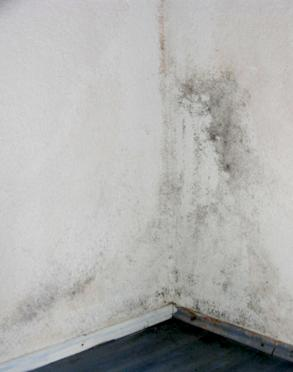
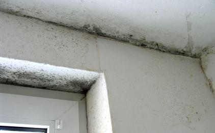

Weitere Datenübertragung Ihres Webseitenbesuchs an Google durch ein Opt-Out-Cookie stoppen - Klick!
Stop transferring your visit data to Google by a Opt-Out-Cookie - click!: Stop Google AnalyticsCookie Info.Datenschutzerklärung
Nachfolgend ein kostenloser Leitfaden für Hausbesitzer, Vermieter und Mieter zum Schimmelpilzbefall an der Wand, der als Vortrag (DECHEMA, Frankfurt a.Main) und in Fachzeitschriften (u. a. "Der
Vermieter") Aufmerksamkeit fand. Vielleicht auch für die mit Schimmelbefall kämpfenden Leser hier von Nutzen:
Schimmel an der Wand - Ursachen und Beseitigung 1 [7]
Das Thema Schimmel ist heute zum Dauerbrenner geworden. Meist geht es um falsche Bauweise nach ungeeigneten bauphysikalischen
Rechentheorien, falsches Lüften und ungenügende Heiztechnik. Auf die häufigsten
Fallgestaltungen soll hier eingegangen werden.
Voraus: Schimmelbefall ist nicht nur ein baulicher Mangel. Oft ist er mit krankmachenden Bakterien
vergesellschaftet und scheidet selbst Giftstoffe aus - egal, ob als schwarzer, brauner, grüner, roter, gelber oder weißer
Schimmelpilz auftretend. Erhebliche Gesundheitsgefahren sind damit verbunden. Nicht nur für Kinder und Heranwachsende, sondern auch
viele immungeschwächte und streßüberlastete Erwachsene werden Opfer typischer Schimmelsymptome wie beispielsweise Asthma
und Allergie, Kopfschmerz, Augentränen, Nasenlaufen, Gliederschmerzen, Erschöpfungszustände und Müdigkeit.

.

Aus meiner Bauberatung: Zwei typische Befallssituationen von Schimmelpilz in Wohnungen - im Schlafzimmer
und Badezimmer (Bildautor: Rüdiger Thume)
Da die überhöhte Feuchte als Auslöser des meist an den Raumoberflächen als "Stockflecken" erstmals sichtbar werdenden
Schimmelpilzbefalls die Bauwerksteile aus Holz betreffen kann, ist auch ein Befall mit feuchteliebenden Holzschädlingen wie Echter
Hausschwamm, Weißer Porenschwamm, Brauner Kellerschwamm, Blättling und andere Naßfäulepilze sowie
holzzerstörende Insekten wie der Gemeine Nagekäfer, der Trotzkopf und der Hausbock nicht auszuschließen. Deswegen
dürfen die nachfolgenden Empfehlungen nicht als verbindliche Lösungen verstanden werden, sondern sind durch medizinischen,
mykologischen, holzschutz- und bautechnischen Sachverstand zu ergänzen.
Werden aus Beweissicherungsgründen, zur Begutachtung gesundheitlicher Risiken oder bei unklarer Befallslage
detaillierte Untersuchungen über Umfang und Art des Schimmelpilzbefalls erforderlich, sollte man sich zunächst
vom staatlichen Gesundheitsamt beraten lassen. Diese können dann Sachverständige für die weitere
Untersuchung benennen. Tipp: Mehrere Angebote einholen und den Auftrag mit dem Gesundheitsamt abstimmen.
Und vor diesem kostenintensiven Weg in einen Rechtstreit gäbe es auch die Möglichkeit, die Ursache des
Schimmelbefalls durch kostengünstige Eigenleistung faktensicher festzustellen, indem in der Wohnung über eine
angemessene Zeitdauer Klimamessungen durch ein Meßgerät für Raumlufttemperatur und Raumluftfeuchte mit
integriertem Datenlogger durchgeführt werden. Die eindeutig erfaßten und zweifelsfrei dokumentierten
Klimadaten können dann beweisen, ob die Wohnung / Mietwohnung nutzerseits / vom Mieter ausreichend geheizt und gelüftet wurde.
Ist eine möglicherweise schimmelinduzierte Gesundheitsstörung vorhanden, wird hier auf das von Dr. med.
Frank Bartram, Weißenburg, entwickelte Schimmel-Selbsttest-Set verwiesen. Im Zusammenhang mit einer
Blutwertanalyse kann damit der Ort des gesundheitsschädlichen Befalls im Wohn-, Arbeits- oder Freizeitbereich genau lokalisiert werden.
Konrad Fischer: Fassaden energetisch richtig und kostensparend sanieren 1
Sonstige Nützlichkeiten, Möglichkeiten und andere Meinungen für
salzbelastete, feuchte, nasse, abgesoffene, verschimmelte, verpilzte und vermorschte
Häuser - soweit es nicht um nutzlose Horizontalisolierung gegen "aufsteigende Feuchte"
geht, der manche industrieabhängige bzw. ahnungslose Autoren (wer es ist, verrate ich nicht, ätsch!) -
anhängen. Reihenfolge der Titel beinhaltet keinerlei Wertung, der Verfasser dieser Webseite übernimmt für
die gezeigten Artikel/Produkte keine Gewährleistung!!!:


 Inhaltsverzeichnis:
Inhaltsverzeichnis: